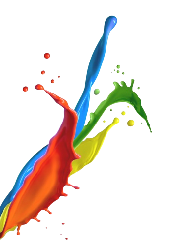
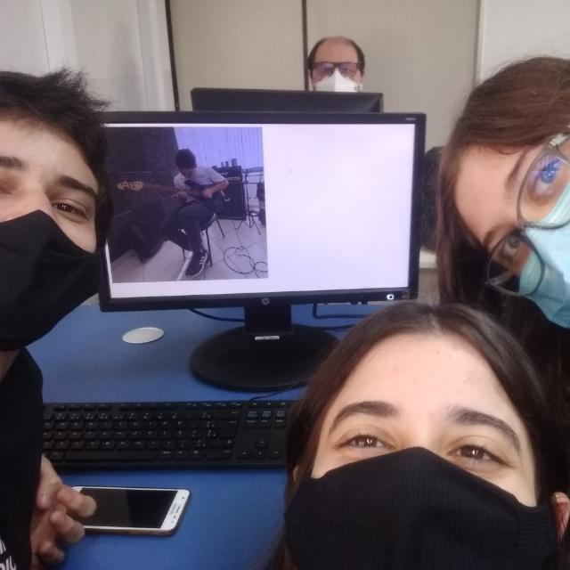
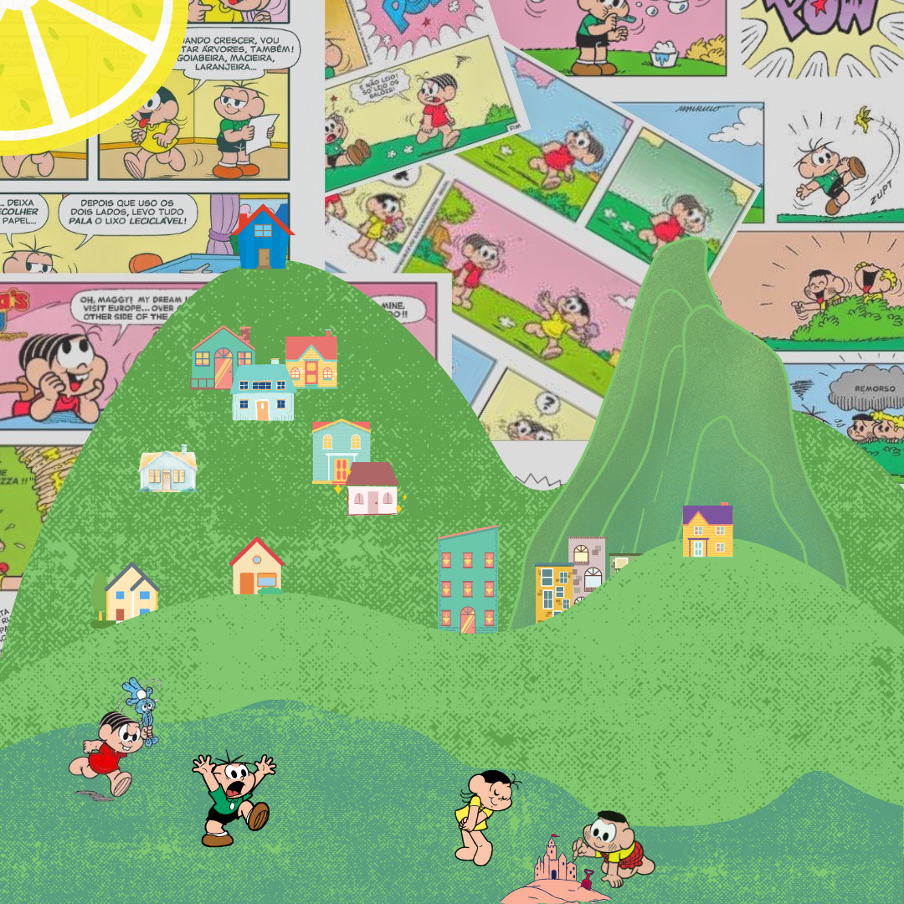

Sobre a semana da arte
A semana da arte é um evento criado pela coordenação pedagógica
da instituição SESI SENAI, de Florianópolis, em colaboração com os docentes,
que tem como objetivo unir a escola em um único projeto, onde nesse projeto,
a arte se torna o principal meio de comunicação e expressão, utilizando textos,
jogos, colagens e edições como ferramenta.

Teenager's void
Sobre o site desenvolvido
A semana da arte é um evento criado pela coordenação pedagógica
da instituição SESI SENAI, de Florianópolis, em colaboração com os docentes,
que tem como objetivo unir a escola em um único projeto, onde nesse projeto,
a arte se torna o principal meio de comunicação e expressão, utilizando textos,
jogos, colagens e edições como ferramenta.

Canned Chaos 3C
Teenager's void
Estilo: Pop Art
Evidenciando elementos da infância de muitos,
a obra também tem sua parte atual, com memes e imagens que viralizaram há não muito tempo.
Cores vivas e um filtro vintage estão presentes também. A obra faz alusão a mente de um adolescente,
que está repleta de coisas, que juntas, parecem um tanto quanto confusas.
Autor: Marcia Ravadelli
Nostalgia
Estilo: Pop Art
Assim como o nome já diz, a obra Nostalgia foi criada com a intenção de dar
um gostinho da infância do brasileiro por meio do uso da Pop Art. Utilizando várias imagens de HQ’s e formas
coloridas, ela mostra uma representação do bairro do Limoeiro, icônico lar da Turma da Mônica, criação do Mauricio de Souza.

Autor: Laura Ferrari
Who's the monster?
Estilo: Arte Urbana
A obra demonstra como a vida das cidades destrói a arte e diminui cada vez mais sua valorização,
trazendo um “monstro” sendo atacado por humanos e um questionamento sobre quem realmente é o monstro: a cidade que destrói as expressões
artísticas e deprecia a arte ou um animal gigante que destrói a cidade?

Autor: Marcia Ravadelli
Ocean Invader
Estilo: Arte Urbana
A obra mostra a famosa ilha da magia, cheia de criaturas inusitadas e diferentes
das quais nós lemos nas histórias e lendas sobre esse lugar, como as de Franklin Cascaes.

Autor: Laura Ferrari